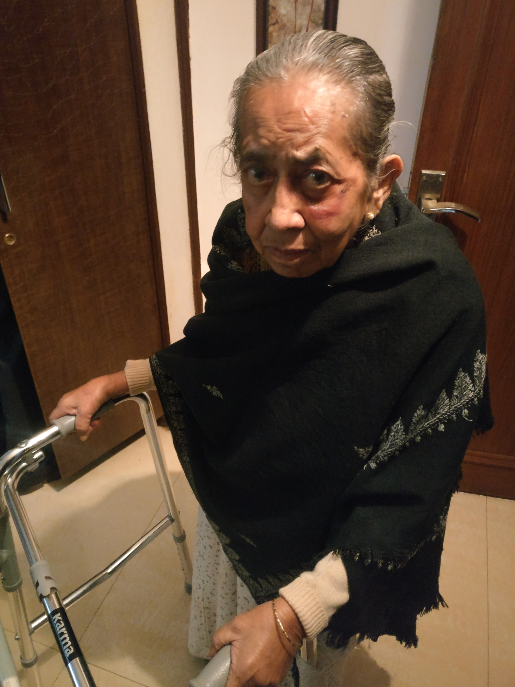

The video was part of the design assignment wherein we had to explore the difference between Design Thinking and Computational Thinking in reference to our proposed product.
About Project.
This project was part of the course IIMT3624 : Design Studio . We were told to design a product that will help or promote the trend of Smart City, the way we understand it. The task involved coming up with a definition for Smart City and creating a prototype for the product we propose under this definition. Time duration for the project was 6 weeks.
My Role
This was an individual project and I was involved in all stages of the product from concept to prototype with regular feedback from the tutor and professor.

A smart city is one in which all the citizens enjoy the same benefits in the environment they live in.
It’s not necessarily technologically savvy but one where people can live freely and find solutions to the most pressing problems in their lives.
Cities are not just a collection of buildings or people, they are an interesting mix of cultures, emotions and ideas. Being an outsider to Hong Kong, I discovered Hong Kong by walking, everywhere and anywhere, right from the steets in Mong Kok, all the way up to the top of the peak.

However, for people with Parkinsons, it is often hard to walk around the city and enjoy the surroundings they live in. A smart city must provide avenues and opportunities for such people not only in the form of walkways but devices that can enable them to walk more freely.
Problem Space
What is Parkinsons?
Parkinson's disease is an illness that affects the part of your brain that controls how you move your body. It can come on so slowly that you don't even notice it at first. But over time, what starts as a little shakiness in your hand can have an impact on how you walk, talk, sleep, and think
How does Parkinsons affect movement?
Parkinson’s disease (PD) can affect the gait, or the way a person walks. The changes in gait may be called Parkinson’s gait or Parkinsonian gait. Gait alterations can be highly disruptive to people with PD and may interfere with the ability to work, exercise, or engage in everyday activities. It is also a symptom that is very outwardly visible and can attract unwanted attention.
What is Freezing of Gait?
Freezing of gait is characterized by a hesitation before stepping forward, or difficulties when initiating walking. Some people with PD report it feels like their feet are glued to the floor. The freezing is frequently temporary, and the gait may be at a normal pace after a step or two. Freezing may occur only in specific situations, for example: when starting to walk, when turning, or when walking towards a particular goal, like a doorway or chair. It can also occur when walking through a doorway or when changing directions. Freezing may also occur when a patient feels like he/she is being rushed or trying to cross a busy street. Freezing can be a potentially serious problem for people with PD, and it may increase the risk of falling.
It is reported that 70% Parkinsons patients have had minor to serious injuries due to a fall from the freezing of gait.
How is Parkinsons cured?
There is no known cure for PD, and there are currently no treatments that slow or stop the natural progression of the disease. However, new research has shown that auditory, tactile or visual cueing can help in maintaining rhythm for the walker and prevent freezing of gait.
Refer - Sensory feedback in Parkinson's disease patients with “on”-predominant freezing of gait
Research
There are several walking inventions that have been designed to aid Parkinsons Patients walk and prevent Freezing of Gait
Vibrating Walking Stick
‘Walk to Beat’ is an intelligent device created by Neha Chaudhry that detects a pause in motion and then sends rhythmic vibrations to the handle, helping the user regain their natural walking motion
Laser Guided Shoes
‘Path Finder’ is a shoe that projects laser lines to trigger walking and thus prevent freezing of gait. The laser cues are activated by pressure observed when the wearer touches down on the ground.
Observation
My Grandmother has Parkinsons and my understanding of the problem comes from her experiences and her tribulations along with other Parkinsons patients I interviewed.

The wounds on her face are a result of frequent falls due to Freezing of Gait and it pains my heart to see her in this condition. While the walker in her hands seems like an optimal solution, she refuses to adopt it like many parkinsons patients because it makes her feel disabled and dependent.
Being a neurogenerative disease, Parkinsons does not make a person physically handicap but affects movement in ways that can lead to serious injuries. Thus patients wish for a solution that is discrete, helps them feel less disabled and empowers them to walk out in the open with an assurance that they will not fall and hurt themselves.
Foot Movement
Prototype